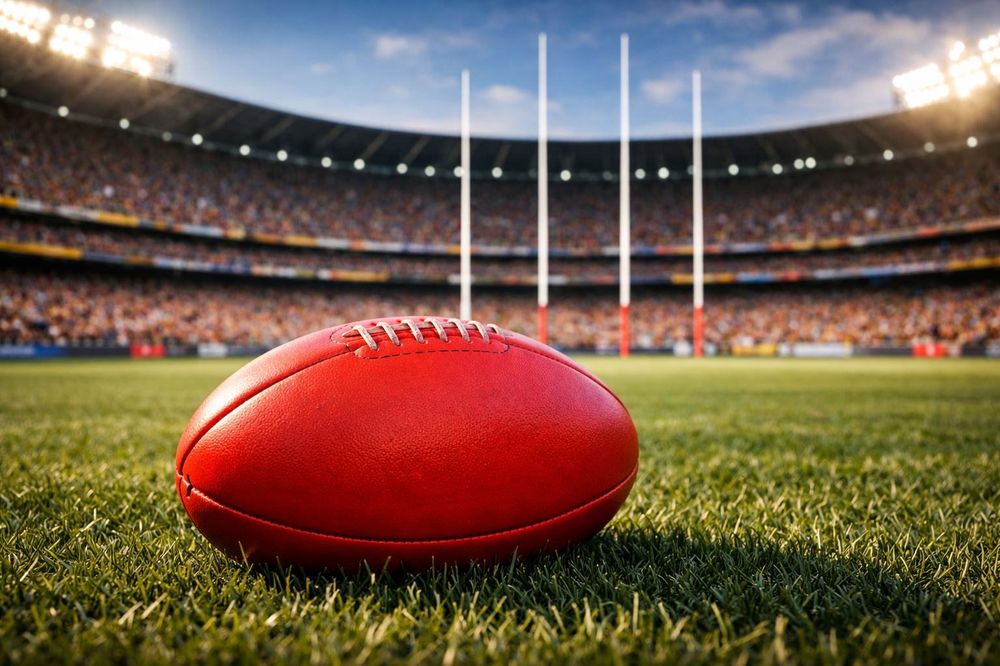
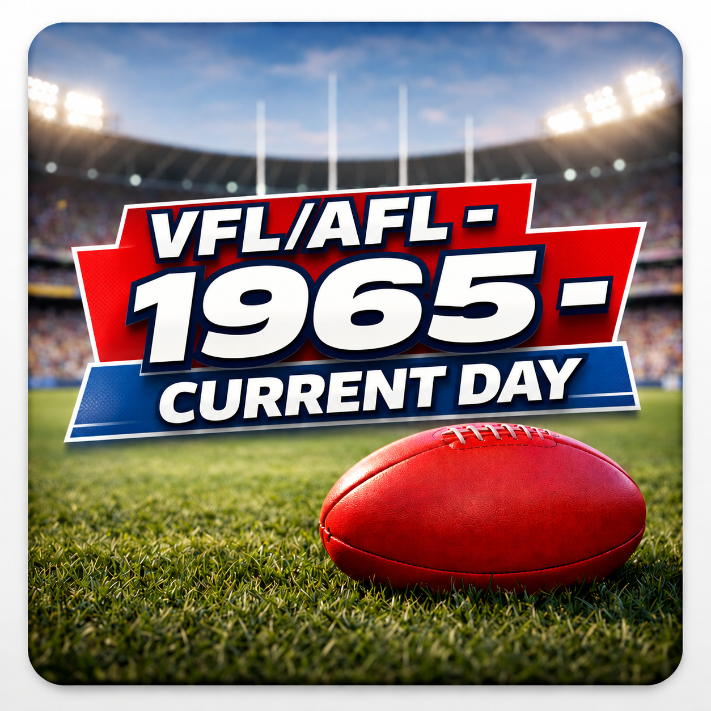

The Sporting Almanac AFL archive explores the modern history of Australian football through season results, head-to-head records, and player performance analysis. From premierships and rivalries to individual brilliance, this section is designed as a comprehensive statistical and historical reference for the AFL era.
